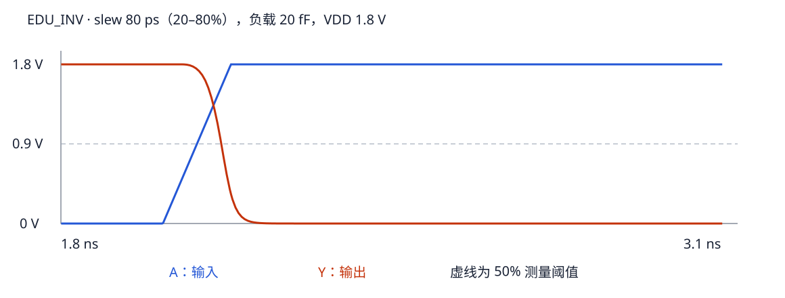

第 30 章 从 SPICE deck 到实测翻转波形
先跑一个正常反相器，再理解表征软件为什么会说“翻转不过去”
30.1 “刻库 / k 库”实际在测什么
库表征把晶体管级电路变成综合、静态时序和功耗分析能使用的模型。它在指定工艺模型、供电和温度下，施加一组输入激励、负载和状态，运行电路仿真，然后从波形提取延迟、转换时间、输入电容、功耗或时序约束。Liberty 是常见结果格式，表征不是只把网表改个后缀。
可以把每个测点想成一次有严格条件的实验：测哪只单元、哪条弧、哪个方向、什么旧状态、其他输入怎样固定、slew/load 多大、测量阈值是什么。只要其中一项错了，就可能没有可用结果。先学会独立检查一个测点，再批量生成二维表。
30.2 deck：交给工具的一套输入说明
Deck 原意来自成叠的输入卡片，今天在 EDA 中泛指一套可执行输入描述。SPICE simulation deck 通常包括电路实例、模型引用、电源、输入波形、负载、分析和测量命令；DRC rule deck 则是图层定义与检查规则。两个都叫 deck，但内容和执行工具不同。
| 对象 | 职责 | 是否单独足够完成本实验 |
|---|---|---|
| 单元 subckt | 声明端口与晶体管连接 | 不够，还缺模型和测试平台 |
| MOS model | 给定偏置下的电流/电荷等行为 | 不够，还缺电路与激励 |
| testbench / simulation deck | 把被测单元接入可运行的实验 | 模型与文件路径正确时可执行 |
| Liberty | 总结测量模型供下游使用 | 不是 SPICE 的器件模型文件 |
30.3 先明确示例身份，避免把不同 INV 串成假流水线
| 名字 | 来源 | 用途 | 不能混用的地方 |
|---|---|---|---|
| INV_X1 | 本地 Nangate/FreePDK45 CDL/GDS/LEF | 真实平面 CMOS 识图与跨视图对照 | 这里没有把它宣称为本文 Level-1 模型的版图 |
| INVX1 | LibreCell layout 的 examples/cells.sp 与 dummy_tech.py | 生成器接口练习 | 不能只因名字近似就配用 Nangate LEF 或 .lib |
| EDU_INV | 本书自拟 Level-1 两管电路 | 可完全复现的波形、阈值与 NLDM 入门 | 不是 FreePDK45 模型；没有 PEX，不用于签核 |
| librecell-lib 中的 INVX1 PEX 例子 | 其 examples 自带网表与模型 | 理解 lctime 接口和历史实现 | 不是上述三个对象的自动提取结果 |
30.4 逐行读一个足够小的反相器测试平台
被测电路 edu_inv.sp 声明 NMOS W=1 μm、PMOS W=2 μm、L=0.18 μm，使用自拟 Level-1 参数。下面展示一个 80 ps 输入 slew、20 fF 负载测点的结构；可执行完整文件由脚本生成。
.include ".../edu_inv.sp"
VDD VDD 0 1.8
VA A 0 PULSE(0 1.8 2n 133.333333333p 133.333333333p 8n 20n)
XU A Y VDD 0 EDU_INV
CL Y 0 20f
.tran 2p 18n
.measure tran cell_fall TRIG v(A) VAL=0.9 RISE=1 TARG v(Y) VAL=0.9 FALL=1
.measure tran cell_rise TRIG v(A) VAL=0.9 FALL=1 TARG v(Y) VAL=0.9 RISE=1
.measure tran rise_transition TRIG v(Y) VAL=0.36 RISE=1 TARG v(Y) VAL=1.44 RISE=1
.measure tran fall_transition TRIG v(Y) VAL=1.44 FALL=1 TARG v(Y) VAL=0.36 FALL=1| 行/参数 | 含义 | 检查方法 |
|---|---|---|
| VDD VDD 0 1.8 | 名为 VDD 的电压源，让节点 VDD 比节点 0 高 1.8 V | 0 是 SPICE 参考地；器件名和网名可以相同但角色不同 |
| PULSE(V1 V2 TD TR TF PW PER) | 低/高值、延迟、上升/下降时间、高平台宽度、周期 | 先手画一周期，确认何时有第一次上升与下降 |
| XU ... EDU_INV | 实例化 subckt，按声明顺序传入节点 | 把 A/Y/VDD/VSS 四个位置逐一对照 |
| CL Y 0 20f | 输出到参考地的 20 fF 集总负载 | 20f 不等于 20p；不要跨 1000 倍还只查晶体管尺寸 |
| .tran 2p 18n | 请求瞬态分析，时间步参数 2 ps、终止 18 ns | 仿真器还会自适应选取内部步长；过粗采样影响交越测量 |
| TRIG / TARG | 起点事件与终点事件；两时刻之差是结果 | 既检查阈值，也检查 RISE/FALL 和第几次事件 |
30.5 PULSE 的 TR 不等于 Liberty 的 slew 索引
本例测量阈值明确设为 20%～80%。对于线性上升的 PULSE，20% 到 80% 只占完整上升时间的 60%。因此想得到 input_slew=80 ps，需设置完整爬升 TR=80/0.6≈133.333 ps；脚本还对输入波形做测量，验证实际 20%～80% 时间确实等于目标。
这条换算仅适用于本例线性斜坡。真实输入驱动器产生的非线性波形、不同 slew 阈值和波形缩放模型不能机械套 0.6。图里电压经过 0.9 V 的时刻用于延迟测量，不代表 slew 也用 50% 一个点来定义。

30.6 从日志的两个绝对时刻读出一个延迟
参考 80 ps / 20 fF 的实际日志，同一次运行中：
| 测量 | trig：起点 | targ：终点 | 两者之差 |
|---|---|---|---|
| cell_fall | A↑ 跨 0.9 V，约 2.066667 ns | Y↓ 跨 0.9 V，约 2.114411 ns | 约 47.74482 ps |
| fall_transition | Y↓ 跨 1.44 V，约 2.094249 ns | Y↓ 跨 0.36 V，约 2.132207 ns | 约 37.95824 ps |
绝对时刻在 ns 量级，差值却只有几十 ps；“输出在 2.114 ns 变了”不表示该单元延迟为 2.114 ns。日志显示的 trig/targ 经过舍入，手工相减和单独打印的高精度测量可能有末位差异。第二行两个点都在同一条输出波形上，这正是 slew 与跨输入/输出的 delay 不同之处。
单元 subckt 本身没有告诉仿真器要翻转几次；PULSE、仿真窗口和 .measure 的事件序号合在一起才定义这个实验。对带反馈的单元，还应先安排合法写入/复位来建立旧状态；不能依赖仿真器偶然找到的工作点代替初始化。.ic 等初值手段与真实写入协议也不是同一件事，需按仿真设置区分。
30.7 运行九个测点，保留 deck、日志和原始波形
cd /home/jasper/code/docs/std-cell
ngspice --version
TUTORIAL_CHAR_OUT=$(mktemp -d /tmp/stdcell-characterize.XXXXXX)
python examples/learning/characterize.py --output "$TUTORIAL_CHAR_OUT"输入 slew={20,80,200} ps，负载={5,20,50} fF，共 9 点；每点测四个 NLDM 值及输入 slew。脚本发现测量缺失或不在本实验合理范围内就报错，不使用 1e31 或 0 代替。它拒绝非空输出目录，避免新结果覆盖旧排错证据。
本机使用 ngspice 42 实测：80 ps、20 fF 点的 cell_rise≈47.74482 ps、cell_fall≈47.74482 ps、rise_transition≈37.95824 ps、fall_transition≈37.95824 ps。这组接近对称的数值来自特意简化的模型参数，不能推导真实 PMOS/NMOS 必然对称。全部数据在CSV，模型哈希与仿真器版本在运行来源记录。
30.8 “翻转不过去”至少有四种不同情况
| 波形证据 | 可能解释 | 下一步 |
|---|---|---|
| 输入没有到预期电平 | 激励、电源、端口顺序或单位错 | 先看测试平台，不先扩大晶体管 |
| 输入正常，输出一直保持旧值 | 弧未敏化、时序单元未初始化、复位压住，也可能连接错误 | 逐个核对逻辑条件与旧状态 |
| 输出朝目标变化，却未在窗口内过阈值 | 负载大、驱动弱、窗口短或供电异常 | 对比轻负载与更长窗口，观察是否最终完整到轨 |
| 过了 50%，却没到 80% | 能测到某种延迟，仍可能测不到输出 slew | 检查波形终值、争用、浮空与阈值；“有 delay”不等于全部合格 |
因此你同事说的“翻转不过去”常包含你理解的“低到高或高到低没有完成”，但工程判据更具体：所需事件是否在规定状态、方向、窗口内跨过规定阈值。截图中 1e31 常是失败/无效占位的线索，不是一个物理上极大的有效延迟，也不能仅凭它锁定根因。
- 把负载从 20 fF 加到 50 fF，先预测 delay/slew 趋势，再查 CSV。
- 把反相器输入固定为 0，为何测不到 cell_fall？
- 若采用 10%～90% slew，完整线性 TR=100 ps 时索引应是多少？
答案
① 本实验同 slew 下两者增大：80 ps 输入时，50 fF 的 delay≈76.77878 ps、输出 slew≈68.33558 ps。② 没有输入上升/输出下降事件，保持高是正确功能。③ 80 ps；延迟的 50% 阈值可以独立保持不变。